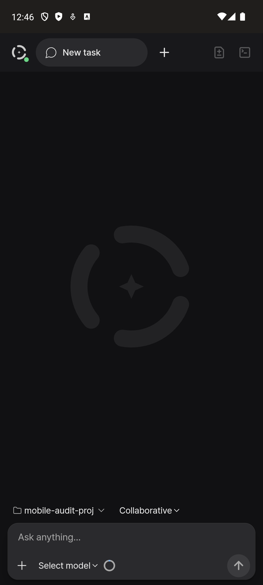
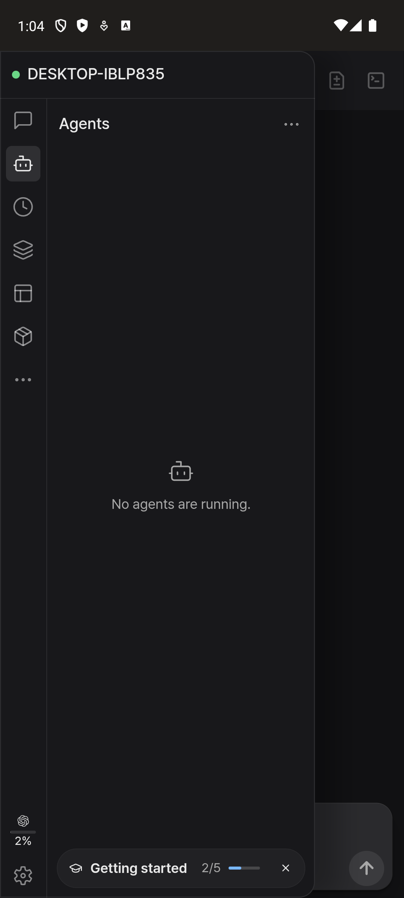
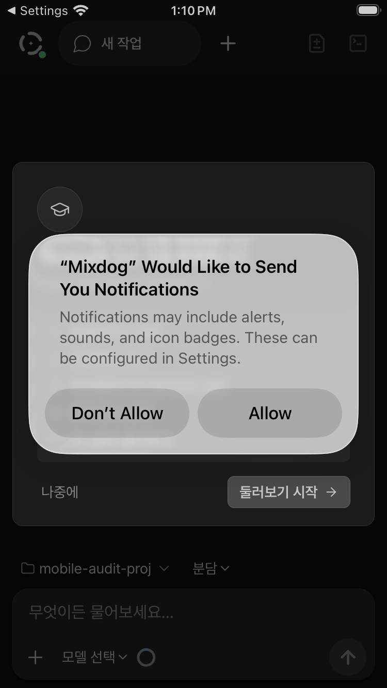
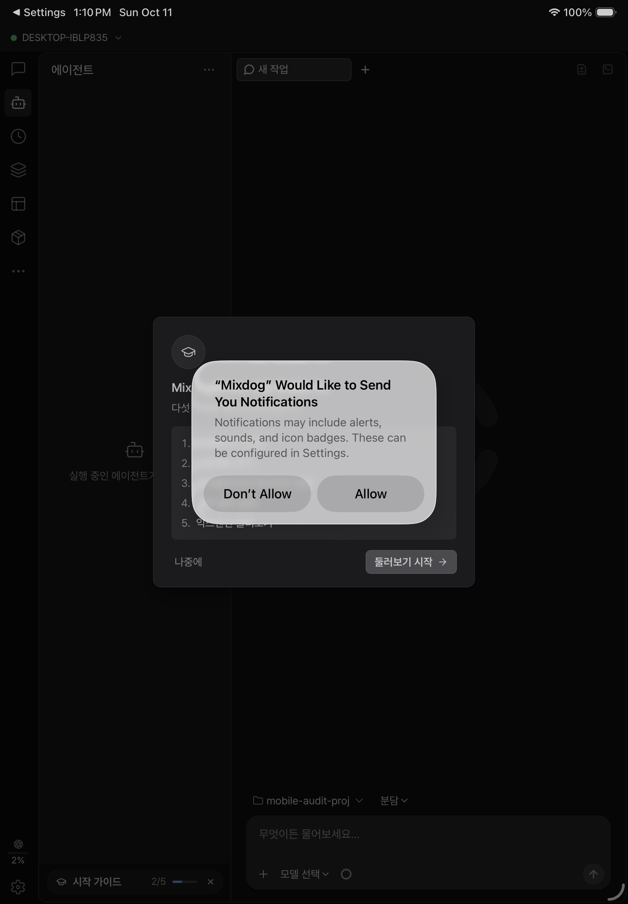
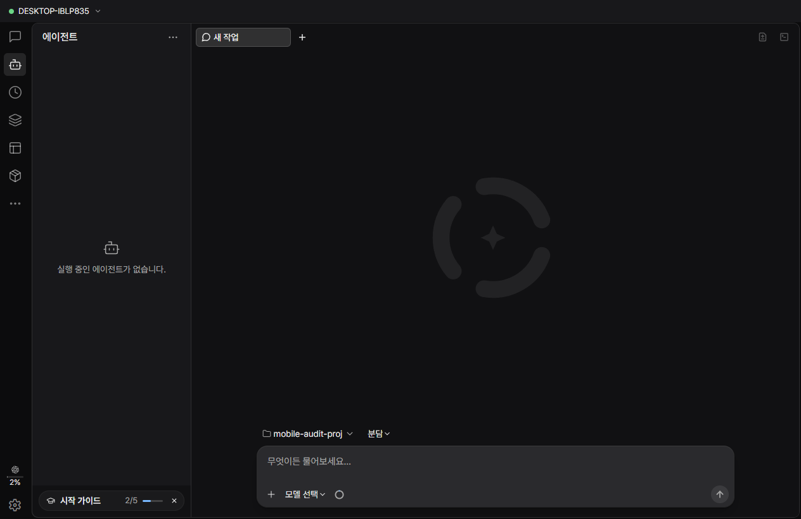
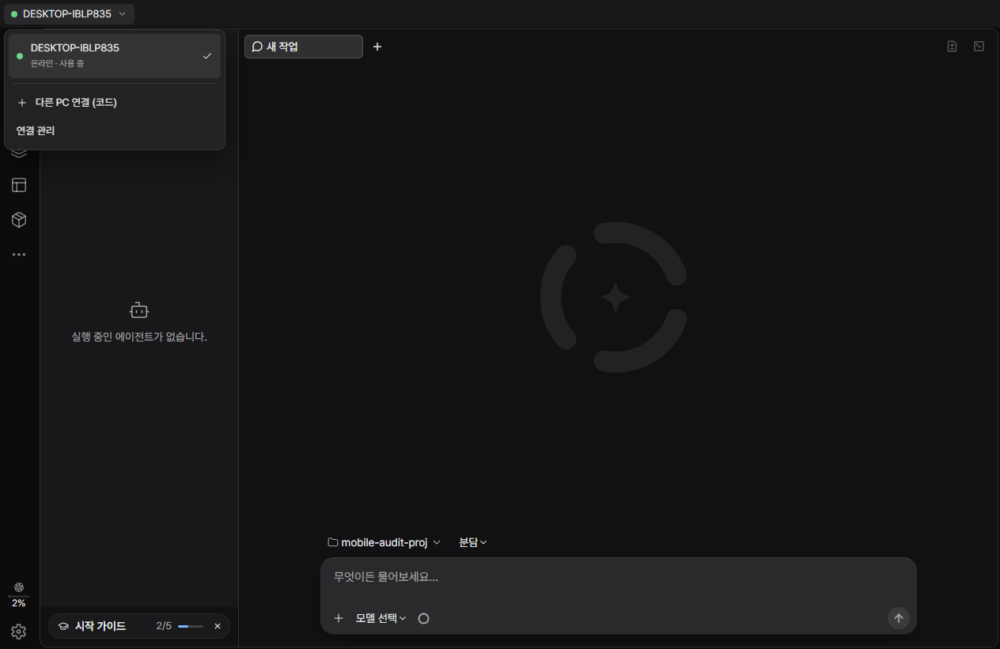
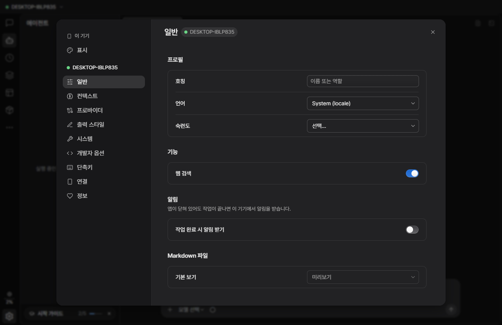
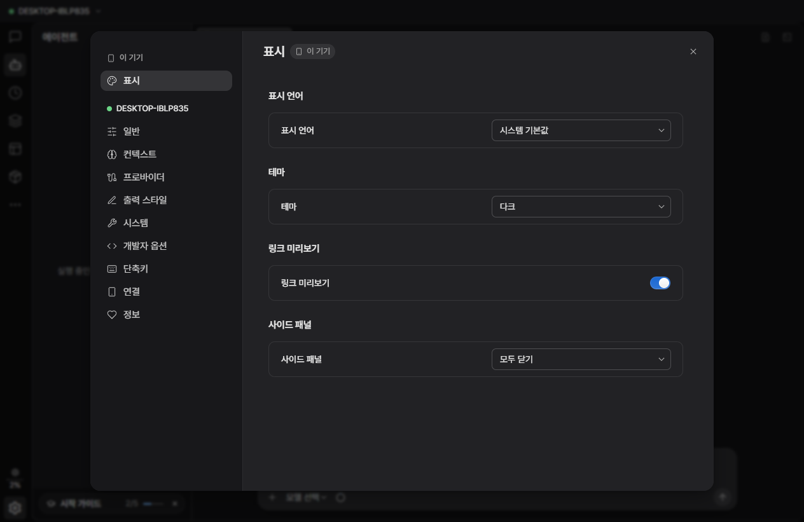
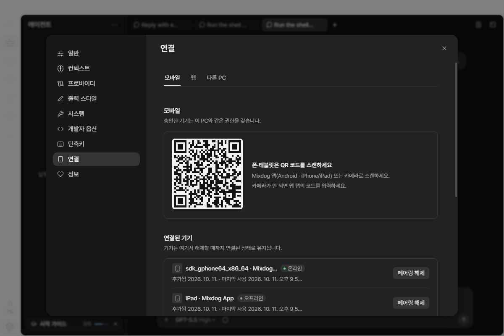

원격 화면 정리 v3 — 최종 적용 스크린샷
스테이징 서버에 적용된 상태를 실제 화면에서 찍은 것입니다. (안드로이드 에뮬레이터 · 가상 아이폰/아이패드 · PC 원격 창 · 메인 PC)
폰 (안드로이드 앱)

메인 화면 — 맨 위 "This PC · Remote" 줄 없음.
로고 오른쪽 아래 초록 점 = 연결됨

로고를 누른 메뉴 — 맨 위 한 줄 "● DESKTOP-IBLP835".
패널 제목과 같은 모양, 아래 패널은 원래 너비
가상 아이폰 · 아이패드 (iOS 앱)

아이폰 — 상태표시줄과 겹치지 않음, 로고에 연결 점.
(가운데는 iOS 알림 권한 창)

아이패드 — 상태표시줄 아래 제목줄에 "● DESKTOP-IBLP835 ⌄".
(가운데는 iOS 알림 권한 창)
PC에서 다른 PC로 붙은 원격 창

원격 창 — 별도 줄 없이 제목줄 왼쪽에 "● DESKTOP-IBLP835 ⌄"만

PC 이름을 누른 메뉴 — PC 목록, 다른 PC 연결 (코드), 연결 관리
원격에서 연 설정

PC 설정 — 왼쪽 "● DESKTOP-IBLP835" 묶음, 제목 옆에 적용 위치 표시

이 기기 설정 — "이 기기 → 표시" (표시 언어 · 테마 · 링크 미리보기 · 사이드 패널)
메인 PC (변화 없음)

메인 PC 설정 → 연결 — 원격이 아니므로 묶음·PC 버튼 없이 기존 그대로